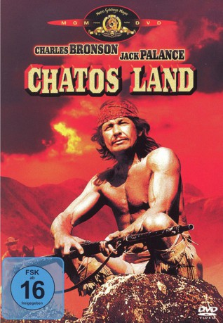
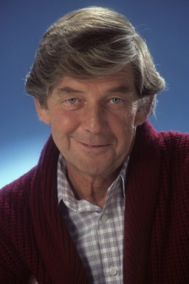
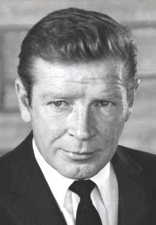

#4959 Chatos Land
Alternativ: Chato's Land
 
 IMDB-Wertung: 6.6 / 10
IMDB-Wertung: 6.6 / 10  Metascore: 0
Metascore: 0 
Das Halbblut Chato tötet einen Sheriff in Notwehr und flieht, verfolgt von einer rachsüchtigen Posse Weißer. Chatos Kenntnis der Steppen Neu Mexikos verschafft ihm einen Vorteil vor seinen Feinden, die sich zur Erfüllung ihrer Mission auch an Chatos Frau vergreifen. Als es den Männern nicht gelingt, Chato zu fassen, und sie stattdessen selbst von ihm dezimiert werden, brechen unter ihnen offene Streitigkeiten aus...
Jahr: 1972
Dauer: 96 Minuten
FSK: 16
Land: England Studio: United ArtistsTonspuren: DD2.0 - ,
Untertitel:
Auflösung: 720p (1280x688) Größe: 3246 MB
Genre: Western
Regisseur: Michael Winner
Drehbuch: Todd Komarnicki
Soundtrack:
Darsteller:
 Charles Bronson als Pardon Chato
Charles Bronson als Pardon Chato Jack Palance als Capt. Quincey Whitmore
Jack Palance als Capt. Quincey Whitmore James Whitmore als Joshua Everette
James Whitmore als Joshua Everette Simon Oakland als Jubal Hooker
Simon Oakland als Jubal Hooker-  Ralph Waite als Elias Hooker
 Richard Jordan als Earl Hooker
Richard Jordan als Earl Hooker- Victor French als Martin Hall
-  Richard Basehart als Nye Buell
- Sonia Rangan als Chato's woman
- William Watson als Harvey Lansing
- Roddy McMillan als Gavin Malechie
- Paul Young als Brady Logan
- Raul Castro als Mexican scout
- Lee Patterson als George Dunn
- Roland Brand als
- Peter Dyneley als Ezra Meade
- Hugh McDermott als Bartender
- Celestino González als
- Florencio Amarilla als
- Verna Harvey als Shelby Hooker
- Sally Adez als Moira Logan
- Clive Endersby als Jacob Meade
- Rebecca Wilson als Edna Malechie
- Luis Amarilla als
Datei: X:\HD-Western-1960-1979\Chatos Land (1972, FSK16, 1280x688).mkv seit 05.12.2016
Festplatte: HD Eastern+Western
 Es gibt insgesamt 110 Filme in der Gruppe 'HD-Western-1960-1979'
Es gibt insgesamt 110 Filme in der Gruppe 'HD-Western-1960-1979'